유통관리사-1급 (2020-06-21 기출문제)
1과목: 유통경영
1. 소매업의 제품 성과를 평가하는 수단 중 하나인 제품별 직접이익(DPP: Direct Product Profit)과 관련한 설명 중 가장 옳지 않은 것은?
- 창고비는 제품 입출고 시 발생하는 직접노무비와 재고유지비이다.
- 조정된 총수익은 총수익에 기타 직접 수익을 합한 것이다.
- 제품별 직접비용은 직접 창고비용과 직접 수송비용, 간접 수송비용을 합한 것이다.
- 제품별 직접이익은 조정된 총수익에서 제품별 직접 비용을 제(除)한 것이다.
- 제품별 직접이익법은 순이익을 비교하는 방식으로 둘이상의 제품을 비교할 때 유용하다.
(정답률: 44%)

2. 소비자의 생명 또는 재산에 대한 위해를 방지하기 위하여 소비자기본법(법률 제16178호, 2018. 12. 31., 일부개정)에서 국가가 정해야 할 광고의 내용 및 방법에 관한 기준으로 옳지 않은 것은?
- 소비자가 오해할 우려가 있는 특정용어의 사용을 제한할 필요가 있는 경우
- 광고의 매체에 대하여 제한이 필요한 경우
- 소비자의 건전하고 자주적인 조직활동을 지원ㆍ육성할 필요가 있는 경우
- 광고의 시간대에 대하여 제한이 필요한 경우
- 용도 또는 원산지 등을 광고하는 때에 특정내용을 소비자에게 반드시 알릴 필요가 있는 경우
(정답률: 40%)
3. 유동부채와 관련된 기본적인 계정과목에 대한 설명 중 가장 옳지 않은 것은?
- 외상매입금은 일반적인 상거래를 통해 발생한 외상으로 인한 채무이다.
- 미지급금과 외상매입금을 묶어서 매입채무라고 한다.
- 영업외 활동에서 외상구입으로 발생한 채무는 미지급금이다.
- 상품을 판매하기로 하고 계약금으로 대금 중 일부를 미리 받은 금액은 선수금이다.
- 해당 회계기간에 발생한 비용 중 현금을 지급하지 않은 부분은 미지급금이다.
(정답률: 36%)
4. 우리 속담에 “잘 되면 내 탓, 잘못되면 조상 탓” 이라는 말이 있다. 이 말과 관련한 인사고과를 할 때 발생할 수 있는 오류로 가장 옳은 것은?
- 대비 오류(contrast errors)
- 중심화경향(central tendency)
- 현혹 효과(halo effect)
- 귀속과정 오류(errors of attribution process)
- 유사성 오류(similar-to-me errors)
(정답률: 36%)
5. 자산수익률을 분석할 때 크게 이익률 관리와 자산회전율 관리로 나누어본다면 이익률 관리에 사용되는 지표만으로 옳은 것은?
- 고정자산 - 재고자산회전율 - 순이익률
- 순이익률 - 영업비용 - 총마진율
- 총마진율 - 순이익률 - 외상매출금
- 자산수익률 - 고정자산 - 영업비용
- 영업비용 - 외상매출금 - 자산회전율
(정답률: 34%)
6. 유통기업의 매출원가와 관련된 설명 중 옳지 않은 것은?
- 재고자산은 회사가 판매하기 위해 보유하고 있는 상품과 제품이며, 이들을 진열하기 위한 매대나 선반은 재고자산에 포함되지 않는다.
- 실지재고조사법은 회계기간 동안 상품의 매입을 집계하였다가 기말에 재고자산을 실사하여 매출원가를 계산하는 방법이다.
- 계속기록법은 재고자산수불장을 비치하고 매출시점 마다 매출원가를 계산하는 방법을 말한다.
- 실지재고조사법은 고가의 소량상품일 때 유리하며 계속기록법은 저가의 대량상품일 때 유용한 방법이다.
- 실지재고조사법은 매입/매출의 빈도가 많을 때 유리하며 계속기록법은 빈도가 낮을 때 유리한 방법이다.
(정답률: 50%)
7. 아래 글상자 내용 중에서 “유통산업발전법”(법률 제14997호, 2017. 10. 31., 일부개정)에서 규정하는 대규모 점포의 요건에 해당하는 것만 나열한 것으로 옳은 것은?
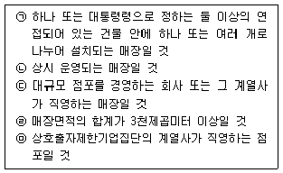
- ㉠ - ㉡ - ㉢
- ㉠ - ㉢ - ㉣
- ㉠ - ㉡ - ㉣
- ㉠ - ㉡ - ㉤
- ㉠ - ㉢ - ㉤
(정답률: 40%)
8. 재무제표 작성과 관련된 표시의 기본 원칙에 대한 설명 중 가장 옳지 않은 것은?
- 전체 재무제표는 적어도 1년마다 작성한다.
- 기업의 현금흐름 정보는 발생주의 기준회계를 사용한다.
- 기업에 관한 모든 경제적 사건은 빠짐없이 공시해야한다.
- 재무제표의 중요한 항목은 본문 또는 주석에 그 내용을 가장 잘 나타낼 수 있도록 구분하여 표시한다.
- 기업은 장기간 존속한다고 가정한다.
(정답률: 19%)
9. 인적자원관리시스템은 고몰입/고참여, 고몰입/저참여, 저몰입/고참여, 저몰입/저참여의 네 가지 유형으로 분류 할 수 있는데 이들 유형에 대한 설명으로 가장 옳지 않은 것은?
- 고몰입/고참여 시스템의 인적자원관리 유효성이 항상 최고인 것은 아니다.
- 고몰입/저참여 시스템의 작동원리는 종업원과 조직 사이의 경제적 교환관계이다.
- 고몰입/저참여 시스템은 종업원들의 교육훈련, 복지 향상을 강조한다.
- 저몰입/고참여 시스템의 작동원리는 종업원들의 일에 대한 자율성과 통제성이다.
- 저몰입/고참여 시스템은 구성원 간의 상호작용, 작업 프로세스의 통합을 강조한다.
(정답률: 0%)
10. 직무급제 임금형태에 대한 설명으로 옳지 않은 것은?
- 직무의 가치에 따라 기본급을 산정하는 임금지급 형태이다.
- 직무가치는 과업이 조직을 위해 창출하는 가치만으로 평가한다.
- 임금률은 주요 직무 및 비주요 직무에 대해 결정한 임금수준이다.
- 임금등급은 임금률 결정을 위해 직무가치가 비슷한 직무들끼리 묶은 집합체이다.
- 직급체계를 단순화하여 임금을 광대역화(broadbanding)하면 임금률 체계의 복잡성이 낮아진다.
(정답률: 30%)
11. 인사조직 관련 용어 중 “만년 과장” 같은 사람들을 경력 정체인력이라 하는데 경력정체인력에 대한 해결책으로 옳지 않은 것은?
- 경력정체인력에 대해 현업에서의 성과목표를 보다 구체적으로 제시한다.
- 경력정체인력의 경력목표를 수정하게 지원한다.
- 경력정체인력에 대해 조직에서 멘토(mentor)를 선정해 준다.
- 경력정체인력을 위한 조기퇴직 프로그램이나 전직 지원제도(outplacement program)를 개발한다.
- 경력정체인력을 위한 새로운 직무를 개발한다.
(정답률: 8%)
12. 브룸(V. Vroom)의 동기부여 기대이론에 따르면, 동기부여를 아래 글상자와 같이 나타낼 수 있다. 최근 기업들은 보상프로그램을 다양하게 마련한 다음, 종업원이 원하는 보상을 선택하게 하는 경향을 보이고 있는데, 이에 대한 설명으로 가장 옳은 것은?
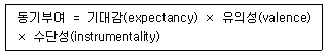
- 기대감을 높이려는 방안이다.
- 유의성을 높이려는 방안이다.
- 수단성을 높이려는 방안이다.
- 기대감, 유의성, 수단성 모두를 높이려는 방안이다.
- 위에는 옳은 설명이 없다.
(정답률: 14%)
13. 식품위생법(법률 제 17091호, 2020.3.24.,)상 용어의 설명으로 옳은 것은?
- 식품위생이란 식품, 식품첨가물에 관한 위생이며, 포장 위생이란 기구나 용기 포장을 대상으로 한다.
- 집단급식소란 특정 다수인에게 영리를 목적으로 음식물을 공급하는 시설을 말한다.
- 식품이란 섭취하는 모든 음식물과 의약을 말한다.
- 영양표시란 식품에 들어있는 영양소에 대한 질적 정보만을 의미한다.
- 기구나 용기를 살균, 소독하는데 사용되는 간접적인 물질도 식품 첨가물이다.
(정답률: 24%)
14. Hackman과 Oldham의 직무특성모델이 제시하는 작업동기를 고취하는 수단으로 옳지 않은 것은?
- 직무 수행의 결과에 대한 피드백을 강화한다.
- 과업들이 일의 완결에 미치는 중요성을 높인다.
- 과업의 범위를 좁혀서 전문적 능력의 축적을 지원한다.
- 과업을 탄력적으로 수행할 수 있도록 자율성을 강화한다.
- 일을 완결한 상태를 식별할 수 있도록 과업의 정체성을 높인다.
(정답률: 36%)
15. 멘토링(mentoring)에 대한 설명 중 가장 옳지 않은 것은?
- 멘토(mentor)란 상대적으로 경험이 없는 멘티(mentee) 또는 부하(protege)를 개발할 경험이 풍부하고 능력 있는 상사를 말한다.
- 멘토링은 참여자들의 효과적인 대인관계, 자아 존중감, 자아개념 등에서 긍정적인 변화를 이끌어내는 프로그램이다.
- 멘토와 멘티(또는 부하)에 의해 공유된 관심이나 가치의 결과로서 비공식적인 관계로 발전하기도 한다.
- 효과적인 멘토링이 되기 위해서는 1:1멘토링프로그램이 전제조건이다.
- 멘토링을 통해 멘토와 멘티(또는 부하) 모두 이익을 얻는 것이 가능하다.
(정답률: 25%)
16. 리더의 유형을 컨트리클럽형, Team형, 무기력형, 과업형, 중도형으로 분류하는 것과 가장 관련이 없는 것은?
- 관리격자(managerial grid) 이론
- 브레이크와 무튼(R.B.Blake & G.S.Mouton)
- 리더의 개인적 특성에 초점을 맞추어 리더 유형을 분류
- 인간관계이론
- 인간에 대한 관심과 생산에 대한 관심
(정답률: 15%)
17. 전통적 조직과 비교한 유연조직(flexible organizing)인사관리시스템의 특징으로 가장 옳지 않은 것은?
- 계층축소 및 직급단순화
- 전문화역량 중심의 인력 운용
- 조직보다 시장 지향의 경력관리
- 결과보다 과정 중심의 업적평가
- 광대역(broadbanding) 임금체계
(정답률: 14%)
18. 의사결정을 개인차원, 집단차원, 조직차원으로 나눌 때 집단차원의 의사결정과 관련된 것으로 가장 옳은 것은?
- 스키마(schema)
- 창의력과 개인의 성격
- 애쉬효과(Asch effect)
- 휴리스틱스(heuristics)
- 전략적 의사결정
(정답률: 34%)
19. 직무분석(job analysis)과 관련된 설명 중 가장 옳지 않은 것은?
- 직무순환(job rotation)은 조직 구성원에게 돌아가면서 여러 가지 직무를 수행하게 하는 것을 말하며, 작업활동을 다양화함으로써 지루함이나 싫증을 감소시켜 준다.
- 직무분석(job analysis)은 직무에 관련된 정보를 체계적으로 수집, 분석, 정리하는 과정이라 할 수 있다.
- 직무명세서(job specification)는 직무를 만족스럽게 수행하는 데 필요한 종업원의 행동, 기능, 능력, 지식 등을 일정한 형식에 맞게 기술한 문서이다.
- 직무분석(job analysis)은 직무기술서와 직무명세서를 우선 작성하여, 이를 바탕으로 분석이 이루어진다.
- 직무기술서(job description)는 직무의 성격, 내용, 이행 방법 등과 직무의 능률적인 수행을 위해 직무에서 기대되는 결과 등을 간략하게 정리해 놓은 문서라고 할 수 있으며, 과업중심적인 직무분석에 의해 얻어지고 과업요건에 초점을 맞추고 있다.
(정답률: 32%)
20. 인적자원관리의 4대 활동의 내용으로 가장 옳지 않은 것은?
- 인적자원의 직무설계‧분석
- 인적자원의 인사평가 실시
- 인적자원의 훈련개발 실시
- 인적자원의 충원전략 수립
- 인적자원의 보상전략 수립
(정답률: 19%)
2과목: 물류경영
21. 기업물류비 산정지침 (국토교통부고시 제2016-182호, 2016.4.7., 일부개정) 내용 중 물류비 과목분류 관련 세목별 비목에 속하지 않는 것은?
- 재료비
- 노무비
- 포장비
- 경비
- 이자
(정답률: 8%)
22. 팔레트 풀(PPS: Pallet Pool System) 활성화 방안으로 옳지 않은 것은?
- 기업마다의 다양한 팔레트 사이즈가 사용되어야 한다.
- 전국적으로 팔레트 집배망이 구축되어야 한다.
- 팔레트의 소재 및 이용 현황을 파악하여야 한다.
- 공팔레트 회수전문업자를 두는 것도 좋은 방법이다.
- 팔레트 데포 및 네트워크 운영을 위한 정보시스템이 필요하다.
(정답률: 23%)
23. 물류의사결정지원시스템(LDSS: Logistics Decision Support System)이 필요한 배경에 대한 설명으로 옳지 않은 것은?
- 조직의 확대로 의사결정의 즉시성이 요구되기 때문이다.
- 사내정보는 질(質)과 양(量)에서 편재하는 경향이 약하기 때문이다.
- 정보량이 증대하여 양질의 정보를 선택하고 판단하는 일이 어렵게 되었기 때문이다.
- 경영환경의 변화로 이제까지의 육감에 의한 의사결정만으로는 대응할 수 없게 되었기 때문이다.
- 정보가 복잡하게 뒤섞이고 산재해 있기 때문에 이것을 체계화하여 공유할 필요가 생겼기 때문이다.
(정답률: 38%)
24. 연간수요량이 4,800개, 재고품단위당 원가가 100원, 평균재고유지비가 재고품 원가의 25%를 차지하며 주문 당발생하는 주문처리비용이 40원이라고 할 때 EOQ는 약 몇 개인가?
- 48
- 77
- 124
- 154
- 480
(정답률: 0%)
25. 물류센터의 입지선정을 위한 절차를 순서대로 나열한 것으로 옳은 것은?
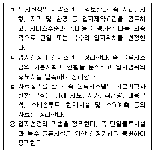
- ㉡ - ㉢ - ㉣ - ㉠
- ㉠ - ㉡ - ㉢ - ㉣
- ㉢ - ㉣ - ㉠ - ㉡
- ㉣ - ㉠ - ㉡ - ㉢
- ㉣ - ㉢ - ㉡ - ㉠
(정답률: 0%)
26. 물류센터 운영 효과에 대한 내용으로 옳지 않은 것은?
- 효과적인 배송체제 구축
- 공장과 물류센터 간에 대량 및 계획운송을 통한 운송비 절감효과
- 물류거점의 조정을 통해 중복운송이나 교차운송 방지
- 과잉재고 및 재고편재 방지
- 물류센터를 판매거점화하면 제조업체의 직판체제의 확립은 가능하나 유통경로는 복잡해지고 길어지는 문제 발생
(정답률: 27%)
27. 사업부제 물류조직의 특징으로 옳지 않은 것은?
- 각 사업부내에 라인과 스탭부문이 존재한다.
- 각 사업부가 독립된 이익책임부서로서 분권조직형태를 취하며, 마치 하나의 독립된 기업과 같이 운영된다.
- 사업부의 이익실현이 가장 우선하므로 전사적인 관점에서 추진되어야 할 물류활동이 효율적으로 이루어지지 않을 수도 있다.
- 각 사업부가 모든 물류활동이행의 책임을 지고 직접 관장하므로 물류관리 효율화를 기할 수 있으나, 인재 육성이 용이하지는 않은 단점을 가지고 있다.
- 기업경영의 규모가 커져 최고경영자가 기업의 모든 업무를 직접 관리하기가 어려워진 경우, 각 사업단위의 업무 효율성을 제고하고 사업성을 극대화하기 위한 조직형태를 취하게 된다.
(정답률: 40%)
28. 아래 글상자에서 설명하고 있는 재고관리기법으로 가장 옳은 것은?
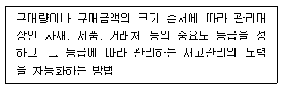
- 정량발주방법
- 정기발주법
- 투빈(two-bin)법
- ABC관리기법
- 경제적주문량(EOQ)법
(정답률: 20%)
29. 포장에 관련된 내용으로 가장 옳지 않은 것은?
- 공업포장은 물품의 운송, 보관을 주목적으로 하는 포장으로 외장에 해당한다.
- 수출포장은 장거리 운송 후 물품이 안전하게 도착하는 보호기능이 우위에 있으므로 외장을 중요시한다.
- 브랜드 이미지 표현이 뛰어난 포장은 소비자에게 부각 될 수 있는 포장이다.
- 상품명, 품종에 대한 식별이 용이한 포장은 창고업자에게 부각될 수 있는 포장이다.
- 기업과 제품광고 효율성을 제고하여 포장비 절감을 통해 원가절감하는 것은 판매자측이 고려하는 적정 포장을 위한 검토조건이다.
(정답률: 25%)
30. 아래 글상자의 ㉠과 ㉡에 해당하는 하역관련 용어를 나열한 것으로 옳은 것은?
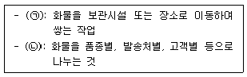
- ㉠ 적하(loading & unloading), ㉡ 적재(stacking)
- ㉠ 운반(carrying), ㉡ 적하(loading & unloading)
- ㉠ 적재(stacking), ㉡ 분류(sorting)
- ㉠ 적하(loading & unloading), ㉡ 반출(picking)
- ㉠ 적재(stacking), ㉡ 반출(picking)
(정답률: 22%)
31. 아래 글상자 내용은 철도컨테이너 하역방식 중 어느 방식에 대한 설명인가?
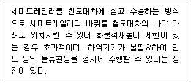
- 피기백(piggy back) 방식
- 캥거루(kangaroo) 방식
- 프레이트 라이너(freight liner) 방식
- 플랙시 밴(flexi-van) 방식
- 스프레드(spread) 방식
(정답률: 8%)
32. 아래 글상자에서 강조하는 서비스를 통해 발생하는 물류 활동에 대한 내용으로 옳은 것은?
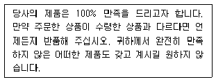
- TL(Truck Load)운송을 LTL(Less Than Truckload) 운송으로 전환하는 물류
- 역(逆)물류(reverse logistics)와 관련이 있음
- 상품이 점포, 물류센터, 벤더 등으로부터 고객방향으로 공급체인을 통해 진행되는 물류
- 크로스도킹(cross docking) 시스템을 통해 물류센터에서 더 많은 재고를 보유하여 비상 상황에 대비하는 것이 효율적임
- 흔히 아웃바운드 운송(outbound transportation)으로 볼 수 있음
(정답률: 29%)
33. 물류정책기본법 (법률 제14541호, 시행 2019.3.19.) 제2조 정의에 나오는 용어에 대한 설명으로 가장 옳지 않은 것은?
- 화물의 운송, 보관, 하역을 위한 시설을 물류시설이라 한다.
- 효율적인 물류활동을 위하여 시설, 장비, 정보, 조직 및 인력 등이 서로 유기적으로 기능을 발휘할 수 있도록 연계된 집합체를 물류사업체라 한다.
- 물류 또는 화주기업들이 물류활동의 효율성을 높이기 위하여 물류에 필요한 각종 시설이나 장비 등을 공동으로 이용하는 것을 물류공동화라 한다.
- 원활한 물류를 위하여 시설 및 장비를 통일하고 단순화하는 것은 물류표준화이다.
- 물류터미널이나 창고 등의 물류시설을 운영하는 물류시설운영업은 물류사업에 속한다.
(정답률: 17%)
34. 전자자료교환(EDI: Electronic Data Interchange)에 대한 설명으로 옳은 것을 모두 고르면?
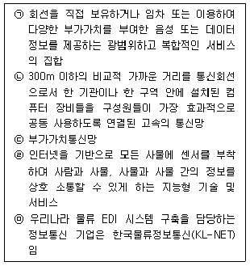
- ㉠
- ㉠, ㉢
- ㉣
- ㉡, ㉤
- ㉤
(정답률: 0%)
35. e-카탈로그(e-catalogue) 상품분류체계표준으로 옳지 않은 것은?
- 국제통일상품분류체계(HS: Harmonized Commodity Description and Coding System)
- 국제표준무역분류(SITC: Standard International Trade Classification)
- UN 일용분류시스템(UNCCS: UN Common Coding System)
- UN 표준상품서비스분류(UN/SPSC: UN/Standard Products and Services Classification)
- 한국표준산업분류(KSIC: Korean Standard Industrial Classification)
(정답률: 8%)
36. 아래 글상자의 ㉠과 ㉡에 들어가는 용어에 대한 설명으로 옳지 않은 것은?
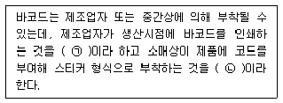
- ㉠은 ㉡에 비해 저렴한 비용으로 바코드를 부착할 수 있다.
- ㉠은 동일상품에 동일코드가 지정된다는 점에서 ㉡보다 효율적이다.
- ㉡은 코드가 표준화 되지 않는다는 단점이 있다.
- ㉠은 소스마킹(source marking), ㉡은 인스토어마킹(instore marking)이다.
- 농수산물은 주로 ㉠을 활용한다.
(정답률: 27%)
37. e-marketplace를 판매자 위주, 구매자 위주, 중계자 위주의 전자시장으로 구분한다고 할 때 판매자 위주의 전자시장에 대해 기술한 내용으로 옳지 않은 것은?
- B2B 전자상거래 구조 중에서 가장 일반적인 구조는 판매자 위주의 구조이다.
- 생산주도형 또는 소매상주도형의 전자상점들은 판매자 위주의 구조에 속한다.
- 판매자가 명성을 가지고 있고 충성고객을 가지고 있는 한 판매자 위주의 구조는 지속될 것이다.
- 구매자의 구매정보가 각 판매자의 서버에 흩어지므로 구매정보를 구매자의 정보시스템에 통합하기 어렵다.
- 구매자는 자신의 서버에 전자시장을 만들고 잠재적인 판매자들로부터 주문요청서를 통해 입찰을 받는다.
(정답률: 0%)
38. 신속 대응(QR: Quick Response)에 대한 내용으로 옳은 것은?
- 공급경로가 고객의 욕구변화에 신속하게 반응할 수 있도록 고객 측과 제조 측을 연결하는 전략을 말한다.
- POS시스템에 의한 고객 데이터와 데이터를 정보화 할 수 있도록 해주는 EDI와 VAN과 같은 응용 소프트웨어가 필요하다.
- 수요예측 오류의 위험은 판매시점에 영향을 받지 않도록 하는 판매시점에서 먼 생산계획, 가상의 장기간 데이터에 의한 수요예측 등을 통해 제거된다.
- QR 시스템 구축을 위해 제조업체는 유통업체와 공급 업자가 함께 계획을 조정하는 방식으로부터 개별 유통 업체들과 그들의 공급업자들이 각기 독자적으로 계획을 수립하는 방식으로 변화시켜야 한다.
- 주요 생산의사결정이 판매시기로부터 멀리 떨어져서 이뤄질 수 있도록 하기 위해 현재 사용 가능한 정보 기술들을 이용하여 부정확한 예측을 기반으로 단기간에 수행되는 상품계획에서 탈피해야 할 필요가 있다.
(정답률: 23%)
39. 제품 가용성에 대한 내용으로 옳지 않은 것은?
- A사가 90% 고객에게 재고로부터 바로 제공하고, 나머지 10%는 가용재고 부족으로 경쟁업체에 빼앗긴 경우 제품충족률은 90%이다.
- 주문충족률은 가용재고로부터 충족되는 주문의 비율이다.
- 주기서비스수준은 모든 고객의 수요가 충족된 두 개의 연속적인 보충배달사이의 간격이다.
- 주문충족률은 제품충족률보다 더 낮은 경향이 있다.
- 고객이 전체 주문이 동시에 충족되는 것에 높은 가치를 부여할 때는 제품충족률을 관리하는 것이 중요하다.
(정답률: 7%)
40. 고객관계관리(CRM: Customer Relationship Management)에 관한 내용으로 옳지 않은 것은?
- 회사의 개별부서 차원에서의 부분별 고객관리
- 개별적인 고객에 대한 1:1 마케팅
- DB를 이용한 고객 정보 관리
- 규모경영에서 수익중심의 경영
- 고객생애가치 극대화
(정답률: 7%)
3과목: 상권분석
41. 상권분석은 상권의 공간적 범위를 확정하여 고객특성 및 경쟁특성을 파악하고 마케팅전략을 수립하며 판매를 예측하는 과정이다. 상권분석에 필요한 정보를 가장 포괄적으로 얻을 수 있는 방법으로 가장 옳은 것은?
- 통행인구 조사
- 통행차량 조사
- 내점객 설문조사
- 가정방문 면접조사
- 통계자료 조사
(정답률: 7%)
42. 일반적으로 상권분석을 위해 허프모델(Huff model)을 이용할 때 분석의 목적으로 설명하거나 예측하려는 내용으로 보기 어려운 것은?
- 특정입지의 점포가 차지할 상권 내 시장점유율
- 특정입지의 점포가 획득할 상권 내 소비자의 평균 이동 거리
- 특정입지의 점포가 획득할 상권 내 소비지출액의 총 규모
- 특정지점의 소비자가 특정입지의 점포에서 구매할 확률
- 특정지점의 소비자가 총소비지출 중 특정입지의 점포에서 소비할 금액의 비율
(정답률: 12%)
43. 아래 글상자 안의 내용이 설명하는 입지로 가장 옳은 것은?
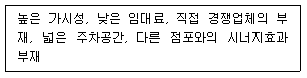
- 쇼핑센터
- 복합용도 개발지역 입지
- 도심 입지
- 레저커뮤니티 입지
- 노면 독립입지
(정답률: 13%)
44. 점포입지이론 중 입지의 상호의존적 관점에서 과점(oligopoly)모형과 가장 가까운 이론으로 옳은 것은?
- 베버(A. Weber)의 최소비용이론
- 호텔링(H. Hotelling)의 입지모델
- 크리스탈러(W. Christaller)의 중심지이론
- 후버(E. M. Hoover)의 경제활동의 입지이론
- 그린허트(M. L. Greenhut)의 공장입지의 일반이론
(정답률: 0%)
45. 중심지이론에 따르면 중심지의 공간적 분포는 적용되는 포섭원리(nested theory)에 따라 달라진다. 이러한 포섭 원리에 대한 설명으로 가장 옳지 않은 것은?
- 시장원리에 따라 포섭이 이루어지면 사람들의 쇼핑여행 거리가 최소화된다.
- 행정원리를 따르면 개별 저차 중심지는 온전하게 하나의 고차 중심지에 포섭된다.
- 교통원리에 따라 포섭이 이루어지면 중심지들을 연결하는 도로망 길이가 최소화된다.
- 가정들이 충족되면, 포섭원리와 상관없이 고차 중심지의 배후지 면적은 동일하다.
- 가정들이 충족되면, 포섭원리와 상관없이 중심지의 배후지는 육각형 형태를 취한다.
(정답률: 14%)
46. 상권에 대한 설명으로 옳지 않은 것은?
- 시간인자와 비용인자에 의해 규정되는 시장지역(market area)이다.
- 온라인 또는 모바일거래의 증가는 전통 소매상권의 약화를 가져온다.
- 상품가치의 보존성이 높을수록 해당 상품의 상권범위가 축소된다.
- 도매상권은 사람을 매개로 하지 않기 때문에 시간 인자의 제약이 낮다.
- 상권은 공급측면에서의 기준이며, 수요 측면에서는 생활권이라고도 한다.
(정답률: 19%)
47. 시계성(視界性)은 매출과 밀접한 관련이 있다. 시계성과 관련된 내용으로 옳지 않은 것은?
- 시계성이 양호한가를 판단하기 위해서는 어디에서 보이는가(基點)를 고려해야 한다.
- 시계성을 확보하기 위해서는 점포의 위치와 함께 간판의 위치와 형태도 중요하다.
- 상권의 특성에 따라 차량속에서의 시계성보다는 도보 통행시의 시계성을 우선적으로 고려하여야 하는 경우도 있다.
- 차량의 속도가 빨라질수록 시계가 좁아지기 때문에 내측(인커브) 점포는 불리해진다.
- 차량으로부터의 시계성은 도로의 외측(아웃커브)의 경우보다 내측(인커브)의 경우가 더욱 좋다.
(정답률: 19%)
48. 인간의 각종 활동공간이 어떤 핵을 중심으로 배열된다고 보고 중심지에 의해 재화와 서비스가 제공되는 현상을 다룬 크리스탈러(W. Christaller)의 중심지이론의 기본 가정으로 가장 옳지 않은 것은?
- 연구대상 지역은 구매력이 균등하고 일정 거리까지의 등방성 평지이다.
- 중심지 재화는 가장 가까운 중심지로부터 구매된다.
- 이 평지 상의 어떤 곳도 중심지에 의해 서비스를 제공받지 못하는 곳은 없다.
- 소비자가 중심지로 통행하는 거리는 최소화되어야 한다.
- 어떤 중심지도 초과이윤을 취하지는 못한다.
(정답률: 0%)
49. “자연녹지지역의 대형할인점등 설치·운영에 관한 고시”(산업통상자원부고시 제2015-227호, 2015. 10. 30., 일부개정)는 자연녹지지역 안에 대형할인점 또는 중소 기업공동판매시설을 건축할 수 있도록 규정하고 있다. 아래 글상자에 나열된 “유통산업발전법”(법률 제14997호, 2017. 10. 31., 일부개정) 제2조 및 동법 시행령 제3조의 규정에 의한 대규모점포 중 자연녹지지역 안에 건축 할 수 있는 점포만을 모두 옳게 묶은 것은?
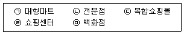
- ㉠
- ㉠, ㉡
- ㉠, ㉡, ㉢
- ㉠, ㉡, ㉢, ㉣
- ㉠, ㉡, ㉢, ㉣, ㉤
(정답률: 7%)
50. 기존 점포들에 대한 소비자들의 이용행태에 대한 정보를 직접적으로 수집하여 소비자의 특정변수에 대한 민감도 (계수)를 분석할 필요성이 가장 낮은 상권분석 기법들로 짝지어진 것 중 가장 옳은 것은?
- MNL모델 및 Huff모델
- Huff모델 및 체크리스트법
- 수정Huff모델 및 MNL모델
- 체크리스트법 및 수정Huff모델
- Huff모델 및 수정Huff모델
(정답률: 14%)
51. 입지의사결정과 상권분석은 물론 gCRM에 이르기까지 활용도가 넓어지고 있는 지리정보시스템(Geographic Information System)의 주요 기능 중에서 아래 글상자가 설명하는 내용으로 가장 옳은 것은?
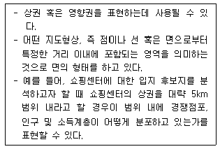
- 주제도작성
- 데이터조회
- 버퍼링(Buffering)
- 중첩
- 교차 및 결합
(정답률: 7%)
52. 점포에 대한 임대차계약을 체결시 확인해야 할 환산보증금 환산액을 아래의 내용을 참고하여 계산한 금액으로 옳은 것은?
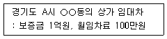
- 1억원
- 1억 100만원
- 1억 5천만원
- 2억원
- 2억 5천만원
(정답률: 20%)
53. 상권의 공간적 범위를 구획하는 접근방식을 공간독점 접근법, 시장침투접근법, 분산시장접근법으로 구분할 때 공간독점접근법에 관한 설명으로 가장 옳지 않은 것은?
- 상권형태에 관하여 인식할 때 상권의 중복을 인정하지 않는다.
- 공간획정과 관련하여 티센다각형이 흔히 이용된다.
- 특정 점포 인근의 가구 모두가 해당 점포에 할당된다고 가정한다.
- 적용가능 점포유형에는 점포 간 차이가 크지 않은 편의점이 해당된다.
- 시장점유모형으로 허프(Huff)모델이나 회귀분석법이 적합하다.
(정답률: 7%)
54. 소매점의 매출을 결정하는 요인은 크게 입지요인과 상권요인으로 구분할 수 있다. 다음 중 상권요인으로 옳지 않은 것은?
- 교통 접근성과 교통량
- 상권내 주민의 연령, 직업, 소득
- 경합점의 분포와 규모
- 고객유도시설
- 상권내 소매판매액
(정답률: 15%)
55. 소매점 입지 주변의 도로 형태에 관한 내용으로 가장 옳지 않은 것은?
- 뱀(serpentine)형태의 도로는 기본적으로 굴곡이 많은 도로이며, 산과 언덕의 경사가 많아 소매업에 좋은 조건이 아니다.
- 루프(loop)형태의 도로는 곳곳에 커브가 많아 소매업에 좋은 조건이 아니다.
- 폭이 넓은 자동차전용도로가 중앙을 가로지르는 곳은 좋은 조건이 아니다.
- 큰 도로를 중심에 두고서 양쪽 옆으로 생선가시처럼 수없이 갈라지는 생선가시(fishbone)형 도로는 소매업에 좋은 조건이 아니다.
- 여러 갈래의 도로가 서로 평행(parallel)한 형태로 놓여있는 도로는 소매업에 좋은 조건이 아니다.
(정답률: 12%)
56. 소매점포의 입지분석에서 다른 입지조건이 동일할 때 도로와 관련한 일반적인 입지판단으로 가장 옳지 않은 것은?
- 방사형 도로에 있어서 교차점에 가까운 위치가 통행이 집중되어 양호한 입지조건으로 볼 수 있다.
- 주도로와 보조도로로부터 접근이 가능하고 중앙분리대가 설치되어 있지 않다면 주도로상의 가까운 모퉁이 점포가 가시성이 높다.
- 도로와의 인접하는 점포의 접면은 넓을수록 유리하며 도로의 제한속도가 높을수록 더 넓어야 한다.
- 주거지에서 역이나 정류장을 연결하는 출퇴근 이동이 많은 도로에서는 대체로 퇴근동선에 위치한 경우가 유리한 입지로 볼 수 있다.
- 커브가 있는 곡선형 도로의 바깥쪽에 있는 점포가 안쪽에 있는 점포보다 가시성 측면에서 유리하다.
(정답률: 19%)
57. 대형상업시설로 다양한 유형의 소매점포들이 집적화된 쇼핑센터의 유형을 규모에 따라 소형에서 대형의 순서로 나열한 것 중 가장 옳은 것은?
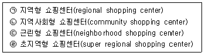
- ㉣ - ㉢ - ㉠ - ㉡
- ㉡ - ㉢ - ㉠ - ㉣
- ㉢ - ㉠ - ㉣ - ㉡
- ㉢ - ㉡ - ㉠ - ㉣
- ㉠ - ㉢ - ㉡ - ㉣
(정답률: 0%)
58. 상권분석 과정에서 활용하는 다양한 확률분석모델들에 대한 설명으로 가장 옳은 것은?
- Huff모델과 달리 MNL모델은 Luce의 선택공리와 관련이 없는 분석방법이다.
- MCI모델과 수정Huff모델은 점포에 대한 객관적 변수와 주관적 변수를 모두 반영할 수 있다.
- MNL모델은 각 소비자의 개인별 데이터 보다는 집단별 구매행동 데이터를 활용하여 계산한다.
- MCI모델과 MNL모델, Huff모델은 모두 공간상호작용 모델의 대표적 분석방법으로 볼 수 있다.
- Huff모델과 달리 MNL모델은 일반적으로 상권을 세부지역(zone)으로 구분하는 절차를 거치지 않는다.
(정답률: 14%)
59. 대형상업시설에 입점하는 테넌트 믹스(tenant mix) 요소중에서 원래는 백화점을 일컫는 말이었지만 최근에는 소극장, 극장, 음식점 등과 같이 흡인력이 크고 시설의 이미지 형성에 도움을 주는 점포를 의미하는 것은?
- 핵점포
- 앵커스토어(anchor store)
- 서브키테넌트(sub-key tenant)
- 트래픽 풀러(traffic puller)
- 일반 테넌트(general tenant)
(정답률: 0%)
60. 도심형 상권의 특징에 관한 설명 중 가장 옳지 않은 것은?
- 다른 상권에 비해 상대적으로 통행 목적이 분명한 목적형 통행 비중이 크다.
- 주간과 야간의 인구 규모 격차가 심하다.
- 통행객의 연령별 격차가 특히 크다.
- 역, 번화가, 대형백화점 등이 몰려있다.
- 광역, 지역형 상권을 형성하고 있다.
(정답률: 7%)
4과목: 유통마케팅
61. 국내 유통시장에서 아웃렛을 운영하는 A사는 외국계 대형할인점인 B사를 인수했다. 이러한 소매기업의 성장 전략으로 가장 옳은 것은?
- 업태 다각화 전략
- 비관련 다각화 전략
- 수직적 통합 전략
- 글로벌시장 진출전략
- 집중적 성장전략
(정답률: 0%)
62. High/Low 가격전략과 비교할 때 EDLP 가격전략의 장점으로 옳지 않은 것은?
- 소매포지셔닝전략의 수립이 용이하다.
- 동일 상품을 다양한 고객에게 판매할 수 있다.
- 품절을 감소시키고 재고관리를 개선시키는 효과가 있다.
- 광고비를 절감하고 재고회전율을 높일 수 있다.
- PB 등을 이용하여 가격 전쟁을 피하는 전략을 활용할 수 있다.
(정답률: 14%)
63. 아래 글상자에서 설명하는 소매업의 매입방식으로 옳은 것은?
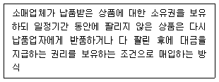
- 선도구매(forward buying)
- 위탁구매(consignment buying)
- 개발구매(R&D buying)
- 약정구매(memorandum buying)
- 인정구매(approval buying)
(정답률: 7%)
64. 머천다이징에 대한 설명으로 가장 옳지 않은 것은?
- 좁게 정의하면 상품구색관리라고 할 수 있다.
- 소비자가 원하는 상품을, 원하는 가격에, 원하는 수량을, 원하는 시기에, 원하는 장소에서 구입할 수 있도록 하려는 활동이다.
- 매장의 수익을 극대화하는 상품을 선별하여 매입 또는 테넌트를 관리하는데 중점을 둔다.
- 넓게 해석하면 상품구색계획, 구매활동, 가격설정활동, 소매믹스 및 판매활동까지를 포함한다.
- 크게 가격중심의 머천다이징과 비(非)가격중심의 머천다이징으로 분류하는 것이 일반적이다.
(정답률: 7%)
65. 아래 글상자의 내용이 설명하는 대상으로 가장 옳은 것은?
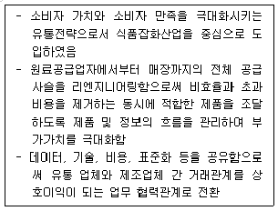
- QR(Ｑuick Ｒesponse) 시스템
- ECR(Efficient Consumer Response) 시스템
- ERP(Enterprise Resource Planning) 시스템
- SCM(Supply Chain Management) 시스템
- HC(Horizontal Combination) 시스템
(정답률: 25%)
66. 아래 글상자에서 설명하는 소매경영 활동으로 옳은 것은?
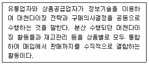
- 단품관리
- 공급체인관리
- 상품믹스관리
- 카테고리관리
- 전략적재고관리
(정답률: 0%)
67. 상품의 가격을 결정하는 요소 중 제조원가에 포함되지 않는 것은?
- 직접재료비
- 판매관리비
- 간접제조경비
- 직접노무비
- 간접재료비
(정답률: 13%)
68. 소셜커머스에 대한 설명으로 가장 옳지 않은 것은?
- 오프라인 채널에 비해 낮은 가격으로 상품을 공급한다.
- 주 수입원은 판매금액의 일정비율을 수취하는 판매 수수료이다.
- 판매한 상품의 배송 및 반품처리 등에 대해 책임을 지지 않는다.
- 오픈마켓이나 종합몰에 비해 상품의 구색이 적은 편이다.
- 고객들에게 상품을 추천해주는 역할을 한다는 점에서 큐레이션커머스의 형태를 띤다.
(정답률: 13%)
69. 소매업체가 지속적으로 경쟁우위를 확보할 수 있는 요소에 대한 설명으로 가장 옳지 않은 것은?
- 소매업체들은 공급업체와의 강력한 유대를 통해 인기 상품을 우선적으로 공급받는 배타적 권리를 확보할 수 있다.
- 정교한 물류시스템의 활용은 소매업체의 효율성을 증대한다.
- 온라인 소매업체의 결정적 경쟁요소는 입지이다.
- 고객충성도는 강력한 소매브랜딩, 포지셔닝, 충성도 프로그램에 의해 구축되며 경쟁력 강화에 매우 중요한 요소이다.
- 백화점과 같은 고품격 서비스를 제공하는 소매업체는 고객서비스의 질을 향상함으로써 경쟁력을 강화할 수 있다.
(정답률: 14%)
70. 아래 글상자에서 설명하는 장점과 단점을 특징으로 하는 조직구조 유형으로 옳은 것은?
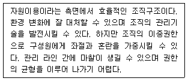
- 라인-스태프 조직
- 사업부제 조직
- 프로젝트 조직
- 매트릭스 조직
- 네트워크 조직
(정답률: 20%)
71. 통신판매업으로 신고해야 하는 사업에 해당하지 않는 것은?
- 보험이나 금융상품을 전화권유로 판매하는 사업
- 의류 및 패션잡화를 TV홈쇼핑을 통해 판매하는 사업
- 여행 및 레저상품을 인터넷으로 판매하는 사업
- 컴퓨터 및 사무용품을 카탈로그를 활용해 판매하는 사업
- 건강기능식품을 신문 및 잡지를 통해 판매하는 사업
(정답률: 7%)
72. 아래 글상자에서 설명하는 브랜드 전략으로 옳은 것은?
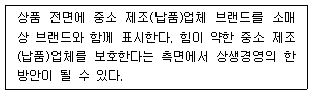
- 하위브랜드 전략(SB)
- 독립브랜드 전략(IB)
- 협력브랜드 전략(MPB)
- 계열사브랜드 전략(AB)
- 제조업체브랜드 전략(NB)
(정답률: 19%)
73. 아래 글상자에서 ㉠, ㉡이 설명하는 진열방식을 옳게 나열한 것은?
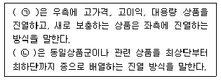
- ㉠ 래프트업 진열, ㉡ 수평진열
- ㉠ 라이트업 진열, ㉡ 수직진열
- ㉠ 라이트업 진열, ㉡ 점내진열
- ㉠ 래프트업 진열, ㉡ 점두진열
- ㉠ 라이트업 진열, ㉡ 수평진열
(정답률: 8%)
74. 소매업체들의 성장전략에 대한 설명의 짝으로 옳은 것은?
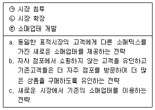
- ㉠-a, ㉡-b, ㉢-c
- ㉠-a, ㉡-c, ㉢-b
- ㉠-b, ㉡-a, ㉢-c
- ㉠-b, ㉡-c, ㉢-a
- ㉠-c, ㉡-a, ㉢-b
(정답률: 13%)
75. 소매업체가 고객생애가치를 높이는 방법으로 옳지 않은 것은?
- 고객에게 더 큰 가치를 제공하여 고객획득률을 향상하는 방안
- 고객카드 적립률 제고를 통해 고객유지율을 향상시키는 프로그램
- 고객기대와 비교한 성과 향상을 통해 고객만족도를 향상시키는 프로그램
- 전환장벽을 낮추어 고객유지율을 향상시키는 프로그램
- 온-오프라인 구전을 통해 고객획득률을 높이고 획득 비용을 낮추는 프로그램
(정답률: 15%)
76. 서비스의 수요조절 전략 사례로 가장 옳지 않은 것은?
- 한국전력은 한여름의 전력 수요를 감소시키기 위해 대중매체를 통해 에너지 절약의 방법을 홍보한다.
- 호텔은 비수기를 위해 기업단위의 연수고객을 유치하거나 다양한 패키지 상품을 개발하여 이용률을 높인다.
- 도심의 중심시장 상가에 인접한 은행들은 시장 거래를 마감하는 새벽에 시장 상인들을 대상으로 하는 금융 서비스를 제공한다.
- 항공사는 피크 시에 고가격 정책으로 수익성을 확보하고, 피크 타임이 아닌 경우에는 저가격 정책으로 수요를 증대시킨다.
- 레스토랑은 대기시스템을 이용해서 일정 수요를 고정시킨다.
(정답률: 0%)
77. 아래 글상자에서 진열 및 레이아웃과 관련된 설명으로 옳은 것을 모두 고르면?
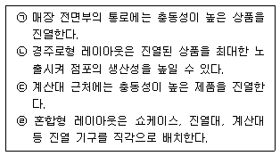
- ㉠, ㉡, ㉢
- ㉠, ㉡, ㉣
- ㉠, ㉢, ㉣
- ㉡, ㉢, ㉣
- ㉠, ㉡, ㉢, ㉣
(정답률: 19%)
78. 표적고객의 특성에 따른 소매유통전략으로 가장 옳지 않은 것은?
- 소비자가 가격에 민감하면 인터넷을 통한 직거래 유통경로의 구축을 검토한다.
- 근거리·소량 쇼핑을 원하면 편의점 유통에 집중한다.
- 시간과 공간의 제한을 받지 않고 구매하기를 원하면 온라인쇼핑을 활용한다.
- 쾌적한 분위기에서 쇼핑하는 것을 즐기면 백화점이나 복합쇼핑몰을 선택한다.
- 한번에 다양한 제품군의 상품들을 구매하기 원하면 전문양판점이나 대형마트를 선택한다.
(정답률: 0%)
79. 아래 글상자에서 홍보에 대한 옳은 설명을 모두 고르면?
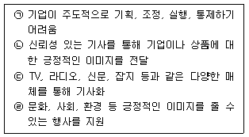
- ㉠, ㉡, ㉢
- ㉠, ㉡, ㉣
- ㉠, ㉢, ㉣
- ㉡, ㉢, ㉣
- ㉠, ㉡, ㉢, ㉣
(정답률: 0%)
80. 소매상의 가격전략에 대한 설명으로 옳지 않은 것은?
- 소매상이 가격경쟁에서 우위를 점하기 위해 판촉을 지나치게 의존하게 되면 고객은 구매를 연기할 가능성이 높아진다.
- EDLP전략은 평상시 저가격인 반면, High/Low전략은 보통 때에는 비싸게 팔고 할인시기에 싸게 판매한다.
- EDLP전략은 매출액 확대에 초점을 두는 반면, High/Low 전략은 높은 이익률에 초점을 둔다.
- EDLP전략은 순자산증가율을 높이는 목표를 둔다면, High/Low전략은 재고회전율을 높이는 목표를 둔다.
- EDLP전략은 광고비를 줄이는 할인점 전략이라면, High/Low전략은 할인 시 광고비를 투자하는 백화점 전략이 해당된다.
(정답률: 19%)
5과목: 유통정보
81. 아래 글상자의 내용을 읽고, 현상을 완화하기 위해 활용 될 수 있는 정보기술과 그에 대한 설명으로 가장 옳지 않은 것은?
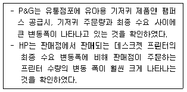
- POS(Point of Sales) - 단말기로부터 수집된 최종 수요정보를 실시간으로 확인할 수 있다.
- VMI(Vender Managed Inventory) - 제품 생산 및 재고에 관한 의사결정을 고객이 하도록 한다.
- EDI(Electronic Data Interchange) - 주문처리과정은 수요자와 공급자 사이의 자동화된 주문처리시스템을 구현한다.
- ECR(Efficient Consumer Response) - 최종 소비자에게 보다 큰 가치를 제공하고, 제조업체와 유통업체 상호간 상생을 추진할 수 있다.
- CPFR(Collaborate Planning Forecasting & Replenishment) - 공급자와 구매자가 함께 제품의 수요예측과 판매 및 재고 보충 계획까지 수립하는 방법으로 EDI 기술을 활용한다.
(정답률: 13%)
82. 유통정보시스템의 구축효과에 대한 내용으로 가장 옳지 않은 것은?
- 비용의 절감
- 판매의 활성화
- 고객관계의 강화
- 환경변화에 대한 능동적 대응
- 자의적 판단에 의한 유통전략 수립
(정답률: 8%)
83. QR물류시스템의 특징을 표현하는 그림에서 ㉠, ㉡, ㉢에 들어갈 단어로 옳은 것은?
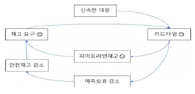
- ㉠ 증가, ㉡ 감소, ㉢ 감소
- ㉠ 감소, ㉡ 증가, ㉢ 감소
- ㉠ 감소, ㉡ 감소, ㉢ 증가
- ㉠ 감소, ㉡ 감소, ㉢ 감소
- ㉠ 증가, ㉡ 증가, ㉢ 증가
(정답률: 13%)
84. 최근 유통기업들은 정보시스템 도입에 있어 클라우드 컴퓨팅 방식의 서비스를 선호하고 있는데, 이와 관련된 설명으로 옳지 않은 것은?
- 클라우드 컴퓨팅은 유사한 의미로 온 디멘드 딜리버리 시스템(on demand delivery systems) 이라고도 한다.
- 클라우드 컴퓨팅은 제공하는 서비스에 따라 PaaS(Platform as a Service), SaaS(Software as a Service), IaaS(Infrastructure as a Service) 등으로 구분할 수 있다.
- 대표적인 클라우드 컴퓨팅 서비스로 아마존 웹서비스(Amazon Web Services)와 마이크로소프트 애져(Microsoft Azure)가 있다.
- 클라우드 컴퓨팅 시스템 활용은 과거 정보시스템 구축 방식과 비교할 때, 보편적으로 정보시스템 구축 비용이 많이 발생한다.
- 클라우드 컴퓨팅은 오프 프레미스(off-premise) 방식으로 구축한다.
(정답률: 7%)
85. 퍼베이시브(pervasive) 컴퓨팅에 대한 설명으로 가장 옳지 않은 것은?
- 언제 어디서든 어떤 기기를 통해서도 컴퓨팅 할 수 있는 환경을 말한다.
- 데스크탑 컴퓨터와 같이 우리의 의식에 인지되고 느낄 수 있는 상태로 컴퓨팅 할 수 있는 환경을 말한다.
- 시간과 장소에 구애받지 않고 언제나 정보통신망에 접속하여 다양한 정보통신서비스를 활용할 수 있는 환경을 의미한다.
- 여러 기기나 사물에 컴퓨터와 정보통신기술을 통합하여 언제, 어디서나 사용자와 커뮤니케이션할 수 있도록 해주는 컴퓨팅 환경을 말한다.
- 사용자가 네트워크나 컴퓨터를 의식하지 않고 장소에 상관없이 자유롭게 네트워크에 접속할 수 있는 정보 통신 환경이다.
(정답률: 14%)
86. 물류정보시스템의 기능에 대한 설명으로 가장 옳지 않은 것은?
- 물류관리시스템의 계획기능은 재고관리, 수요예측 등의 업무를 처리할 수 있는 기능을 제공한다.
- 물류관리시스템의 통제기능은 벤더성과 관리, 운송성과 관리, 고객서비스수준 관리 기능 등이 있다.
- 물류정보시스템은 내부 데이터(internal data) 뿐만 아니라 외부 데이터(external data)도 데이터베이스에 포함하여 관리한다.
- 물류정보시스템의 데이터베이스는 다양한 부분에서 업무를 활용함에 있어 개방적으로 운영하는 것 보다는 폐쇄적으로 운영하는 것이 좋다.
- 물류정보시스템을 도입하면, 정보공유가 가능해져 공급 사슬 가시성이 개선된다.
(정답률: 7%)
87. 채찍효과(bullwhip effect)에 대한 설명으로 옳지 않은 것은?
- 수요 예측에 있어, 공급사슬 상류에서 발생해 공급사슬 하류로 갈수록 오류가 증가된다.
- 공급사슬관리에서 나타나는 문제로 정보왜곡 현상을 일컫는 용어이다.
- 유통업체와 제조업체가 정보공유 시스템을 도입하면, 채찍효과를 최소화할 수 있다.
- 유통업체가 판매시점관리시스템을 도입해 판매정보를 제조업체에 제공해준다면, 정보왜곡문제를 줄일 수 있다.
- 채찍효과가 발생하면, 제조업체와 유통업체는 생산과 판매 측면에서 비효율적인 문제가 발생한다.
(정답률: 7%)
88. 아래 글상자의 내용 중 ㉠에 들어갈 용어와 관련된 설명으로 짝지어진 것으로 가장 옳은 것은?
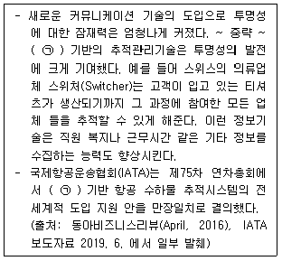
- RFID - 바코드에 비해 많은 정보를 다룰 수 있다.
- 바코드 - 모든 태그는 읽기와 쓰기가 반복적으로 가능하다.
- RFID - 대부분의 태그는 재활용이 불가능하다.
- 바코드 - 태그 비용은 점점 더 하락 중에 있다.
- RFID - 태그 기술은 국가단위나 지역단위의 지엽적 활용 단계이다.
(정답률: 15%)
89. A사는 유통정보를 관리하는 시스템을 클라이언트-서버 아키텍처(client-server architecture) 기반으로 구축하고자 한다. 클라이언트-서버 아키텍처와 관련한 설명으로 가장 옳지 않은 것은?
- 클라이언트-서버 아키텍처는 서비스를 요구하는 클라 이언트와 요구사항에 대응하는 서버 간 작업과 워크로드를 분할하는 컴퓨팅 모델이다.
- 2계층 구조에 비해 3계층 구조가 상대적으로 더 나은 안정성과 보안향상 등 효율성을 제공한다.
- 프레젠테이션 로직, 비즈니스 로직, 데이터베이스로직을 클라이언트 계층(tier)에 구현한 경우를 3계층 구조라 한다.
- 프레젠테이션 로직은 사용자에게 데이터를 표시하고, 사용자로부터 데이터를 입력받는 역할을 수행한다.
- 비즈니스 로직은 비즈니스 트랜잭션 과정과 데이터 저장장치에 접속하여 어떠한 데이터가 필요한지 명시해 주는 역할을 한다.
(정답률: 6%)
90. 정보기술이 도입되면서 유통시장에서 나타난 변화 방향으로 옳은 것은?
- 기술 발전에 따라 소비자 중심에서 공급자 중심으로 시장이 변화되고 있다.
- 기술 발전에 따라 풀(pull) 관행에서 푸시(push) 관행으로 시장이 변하고 있다.
- 기술 발전에 따라 관계 중심에서 거래 중심으로 시장이 변화하고 있다.
- 기술 발전에 따라 프로세스 중심에서 기능 중심으로 시장이 변화하고 있다.
- 기술 발전에 따라 독자적 경쟁에서 네트워크 경쟁으로 시장이 변화하고 있다.
(정답률: 7%)
91. 포터와 밀러(1985)의 가치사슬모형에서 개별 활동의 가치를 직접적으로 지원할 정보기술을 연결한 것 중 가장 옳지 않은 것은?
- 유입물류활동 - JIT(Just In Time)
- 제품연구개발활동 - CAD/CAM(Computer Aided Design/Computer Aided Manufacturing)
- 마케팅과 판매활동 - POS(Point Of Sales)
- 산출물류활동 - RFID(Radio Frequency IDentification)
- 고객관리활동 - EDI(Electronic Data Interchange)
(정답률: 13%)
92. 아래 글상자에서 설명하는 용어로 가장 옳은 것은?
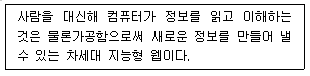
- 웹 호스팅(web hosting)
- 시맨틱 웹(semantic web)
- 웹 브라우저(web browser)
- 리얼 월드 웹(real world web)
- 월드 와이드 웹(world wide web)
(정답률: 7%)
93. 아래 글상자의 내용은 A사의 유통정보시스템 구축 시 요구되는 사항들이다. 관련된 정보기술들과 내용이 옳지 않은 것은?
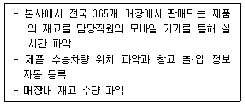
- BYOD(Bring Your Own Device) - 서비스 이용자가 자신이 소지하고 있는 스마트 디바이스를 활용하여 업무 또는 정보 획득에 활용하는 기술
- 센싱(sensing) - 각종 센서를 통해 데이터 수집
- RFID(Radio Frequency IDentification) - 유선망을 이용해 보다 효율적으로 데이터를 전송
- LBS(Location Based Service) - 무선통신망 및 GPS (Global Positioning Systems) 등을 통해 얻은 위치정보를 바탕으로 인터넷 사용자에게 사용자가 변경되는 위치에 따른 특정정보를 제공하는 무선 콘텐츠 서비스 지원 기술
- 사물인터넷(IoT, Internet of Things) - 정보교류를 사람과 사물, 사물과 사물로 확장시킨 개념으로 센서·지능을 사물(객체)에 탑재하고 인터넷 등과 상호연결하여 각종 정보를 수집·처리·운영하는 기술
(정답률: 18%)
94. 아래 글상자가 뜻하는 보안설정기법으로 가장 옳은 것은?
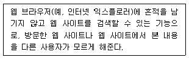
- 인터넷 쿠키(internet cookie)
- 윈도우 방화벽(windows firewall)
- 인프라이빗 브라우징(inprivate browsing)
- 윈도우즈 디펜더(windows defender)
- 스마트 스크린 필터(smart screen filter)
(정답률: 13%)
95. 유통 및 물류관리를 보다 효율적으로 처리해주는 RFID(Radio Frequency IDentification) 기술에 대한 설명 으로 옳은 것은?
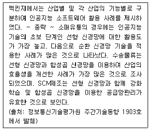
- RFID 기술은 유통 및 물류관리 분야에서 활용되는 접촉식 기술이다.
- RFID 기술은 UHF(Ultra High Frequency) 대역에 서는 작동하지 않고, 저주파(LF: Low Frequency) 대역에서만 작동한다.
- RFID 시스템에 이용되는 수동형 태그는 배터리를 포함하고 있어 능동형 태그보다 먼거리에서 판독기를 통해 태그의 정보를 인식할 수 있다.
- 공급사슬에서 기업들의 RFID 기술 도입은 물류관리의 운영 효율성을 높여 준다.
- RFID 기술은 첨단 기술로 표준화되지 않은 기술이다.
(정답률: 8%)
96. 아래 글상자는 인공지능(AI) 기술이 유통·물류 서비스 분야에 접목된 사례를 분석하여 제시하고 있다. 인공지능 기술과 관련된 용어와 설명으로 가장 옳지 않은 것은?
- 딥러닝(deep learning) - 여러 비선형 변환기법의 조합을 통해 높은 수준의 추상화를 시도하는 기계학습 알고리즘의 집합으로 최근 기계가 데이터를 통해 자신만의 규칙을 생성하여 정보를 학습하는 형태로 발전
- 전이 학습(transfer learning) - 완료된 학습 모델을 유사 분야에 전이하여 학습시키는 기술로, 적은 데이터에도 학습을 빠르게 하고 예측의 정확도를 높임
- 강화 신경망(reinforcing neural network) - 사람의 개입이 없이 스스로 현재의 환경에서 특정 행동의 시행착오 과정을 거치며 보상을 최대화하는 학습 기법
- 순환 신경망(recurrent neural network) - 과거 정보와 현재의 입력값을 결합하는 방법으로 순서를 고려한 학습 모델로서 데이터의 순서가 중요한 시계열 및 언어 처리 분석 등에 활용됨
- 선형 신경망(linear neural network) - 주로 시각적 이미지를 분석하는 데 사용되며, 이미지의 특징을 추출하는 필터 역할을 하는 컨볼루션 레이어를 적용하여 효율적으로 고차원의 이미지를 인식하고 분류함
(정답률: 0%)
97. 지식은 조직의 타 자산들과 다른 특성을 가진다. 이에 대한 내용으로 가장 옳지 않은 것은?
- 지식이 증가함에 따라 지식은 세분화되고 단편화된다.
- 지식은 너무 많은 무형적 측면들이 존재하기 때문에 지식에 대한 투자 효과를 추정하기는 어렵다.
- 지식은 사용되면서 소모되며, 지식을 사용하는 과정에서 종종 지식을 추가하여 활용하는데, 이때 지식의 가치를 보존한다.
- 지식의 유용성과 타당성은 시간이 지남에 따라 달라질 수 있기 때문에 즉각성, 사멸성, 휘발성은 중요한 지식 특성이다.
- 지식은 역동적이며 활동하는 정보이므로 조직은 지식 베이스를 경쟁우위의 원천으로 유지하기 위해 지속적으로 갱신해야 한다.
(정답률: 0%)
98. 핀테크(FinTech) 서비스에 대한 설명으로 옳지 않은 것은?
- 핀테크 기술은 온라인뿐만 아니라 오프라인 매장에서도 이용할 수 있는 첨단 금융기술이다.
- 대표적인 핀테크 서비스 사례로 카카오 페이(kakao pay) 서비스가 있다.
- 핀테크는 클라우드 펀딩, 이체, 지불, 인증 등의 기능을 제공한다.
- 오늘날 기업들은 핀테크 서비스 제공을 위해 다양한 기업들이 참여하는 비즈니스 에코시스템(business eco-systems)을 구축하고 있다.
- 핀테크 서비스는 보안이 취약하지만, 이용 편리성 덕분에 이용자 계층이 지속적으로 증가하고 있다.
(정답률: 7%)
99. 아래 글상자에서 설명하는 웹 요소기술 용어로 가장 옳은 것은?
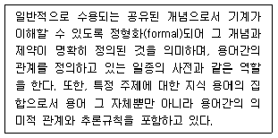
- SPARQL
- NS(namespace)
- 온톨로지(ontology)
- URI(Uniform Resource Identifiers)
- RDF(Resource Description Framework)
(정답률: 0%)
100. 고객관계관리시스템에 대한 설명으로 옳지 않은 것은?
- 고객관계관리시스템은 프런트 오피스 시스템(front office systems)으로 고객과의 상호작용을 강조한다.
- 고객관계관리시스템의 핵심기능은 판매, 마케팅, 서비스이다.
- 고객관계관리시스템은 데이터베이스에 대한 고객정보 분석을 통해 보다 효율적인 마케팅 전략을 제공해준다.
- 고객관계관리시스템은 ERP시스템(Enterprise Resource Planning Systems)에 연동되어 고객관련 업무처리에 도움을 제공한다.
- 고객관계관리시스템은 데이터마이닝(datamining) 기술과 빅데이터(bigdata) 분석 기술 발전에 따라 기업에서 관심을 잃어가고 있다.
(정답률: 7%)